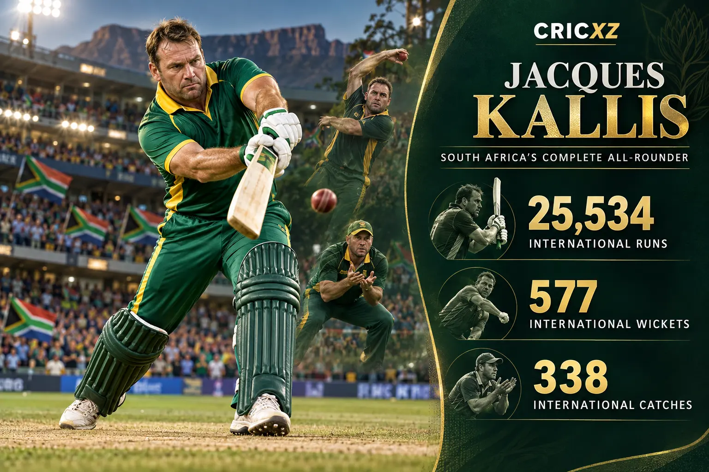
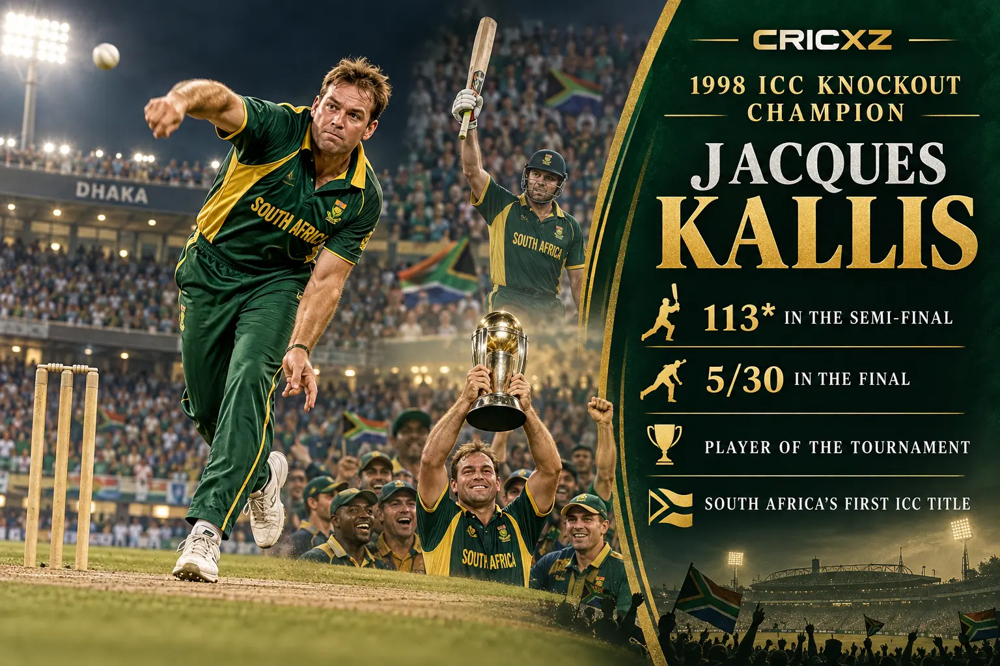

Test Career
- Matches
- 166
- Runs
- 13,289
- Highest score
- 224
- Batting average
- 55.37
- Centuries
- 45
- Wickets
- 292
- Catches
- 200

Jacques Kallis scored 25,534 international runs, took 577 wickets and held 338 catches in one of cricket's most complete all-round careers.
Career statistics are final.
Kallis played his final international match in July 2014. The figures above were checked against ICC and established statistical records.
Across nearly two decades, Kallis combined the technique of a specialist top-order batter, the control of a frontline seamer and exceptional hands in the slips. His 25,534 runs, 577 wickets and 338 catches illustrate an unmatched three-dimensional contribution.

Kallis made an unbeaten 113 in the semi-final and then took 5/30 against the West Indies in the final at Dhaka. South Africa secured its first senior men's ICC trophy, while Kallis finished as Player of the Tournament.
Kallis remains the only player to score at least 10,000 runs and take at least 250 wickets in both Test and ODI cricket. He also finished as South Africa's leading Test run-scorer and one of the most prolific century-makers in Test history.
14 December 1995 – 30 December 2013
Debuted against England at Durban and ended his Test career with a century against India at the same venue.
9 January 1996 – 12 July 2014
Represented South Africa across five World Cup campaigns and completed a 328-match ODI career.
21 October 2005 – 2 October 2012
Added 666 runs, 12 wickets and seven catches during the shortest international format of his career.
Scored 13,289 Test, 11,579 ODI and 666 T20I runs.
Took 292 Test, 273 ODI and 12 T20I wickets.
Excelled as one of cricket's finest slip fielders.
Made 45 Test centuries and 17 ODI centuries.
Passed 10,000 runs and 250 wickets in both Tests and ODIs.
Delivered a five-wicket haul in the ICC KnockOut final.
Was inducted in recognition of his extraordinary all-round career.
Won the Sir Garfield Sobers Trophy after an outstanding period.
Received the leading individual award for Test cricket.
Helped South Africa secure its first senior men's ICC title.
CricXZ is an independent cricket publication and is not affiliated with the ICC, Cricket South Africa or any team.
Read AB de Villiers' career records, explore Ricky Ponting's statistics, or browse all CricXZ player profiles.